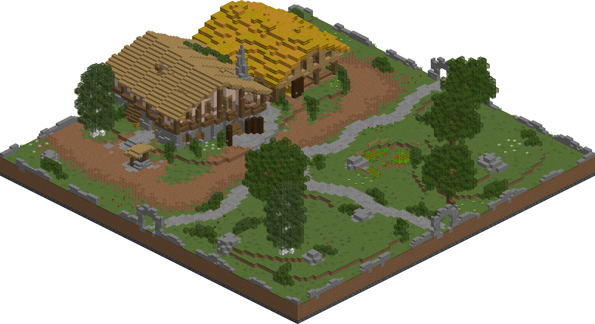
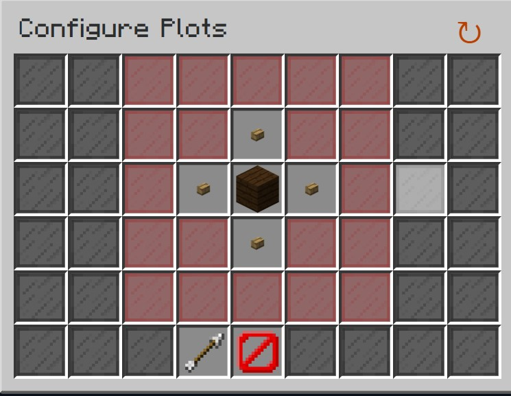
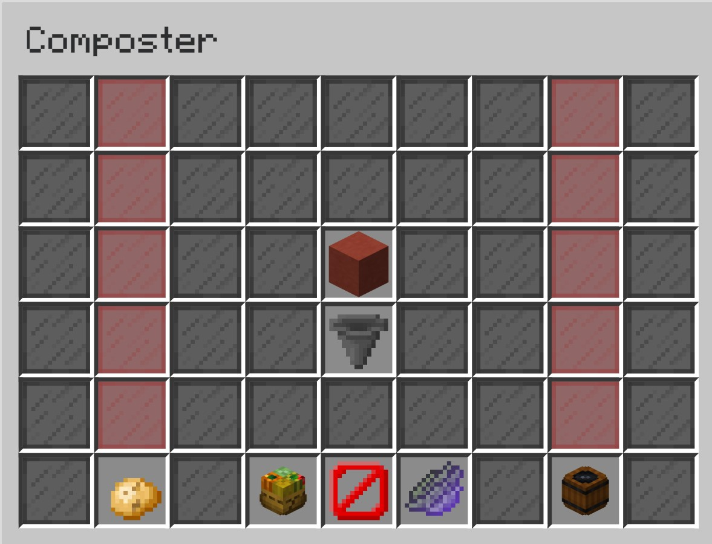

Farming is quite an progressive skill: it contains tons of linear progression, an interesting take of the previous farming skill as a whole, with tons of unique and specific aspects such as compost, plots, levels, and the main factor - the Garden.
What is so unqiue in Farming? What's it all about?
The Garden
Plots
Compost
Visitors & Copper
This is all the 'general intricacies' as mentioned at the home page! I'll be talking about it all as breif yet detailed as I can, and then move to everything else mentioned in the home page.
The Garden
The Garden is the place where ALL your farming gets done! There are a ton of things that you can do in the Garden, it contains everything that I'll be covering, it contains plots, multiple unique garden-only currencies, visitors, and so much more!
The Garden itself isn't all that special due to the fact that I'll be covering all contained inside of it as that is what farming is all about!
This is an image of the Garden!

Plots
Plots are the place you farm in the Garden - You buy them with compost in the Garden's shop. To get a plot working, you need to first clear it from all the extra weeds, trees, and flowers, then you can use pre-made plots for farming wheat, carrots, potato, sugar cane, and more!
The image below is the menu where you can buy garden plots! The cost of the plots are exponetial as you go further away from the center.

Compost
Compost is an essential part of the Garden system as a whole. It incompasses passive money, the ability to buy more plots, and a place to drain some money out of the game, causing deflation in a rather inflated economy. Below is an image of the menu you open in the Composter, which is how you get your compost.

To explain the image: the left colomn is where you put farmable items like carrots, potatos, and seeds, the right colomn is for fueling the composter with certain special fuels, and the middle red block is where compost would be generated every 10 minutes if you have enough fuel and farmable items in there.
Vistiors & Copper
Vistiors are among the most changed part of farming from its previous state, where every 15 minutes (7.5 is your activly farming), a NPC visits your Garden, and asks for certain materials related to farming, like hundreds of certain crops. The purpose of these NPCs are to take away money from the game (deflation) while giving you resources for tools and enchants so you can get better farms and tools. The thing that these NPCs give is called Copper. Copper is a currency that is able to be used in the Garden shop to get special enhancements to your Garden, this can range from simply gaining more farming fortune (similar to mining fortune) to get more crops per crop broken, to tools to help you in your journey in completing farming as a whole.
Overall stuffs
Introduction
Farming is introduced really well. As you begin the game and get slightly better, you are informed that an NPC has come to your personal island, and after clicking them, they get to to the Garden. After this, you get a quest that helps explain the whole of the Garden, from plots, to visitors, to copper, and more! It is definatly the best skill introduction in the game.
Early-game Progression
Farming simply put, has the BEST progression among all skills. You are dropped into the Garden with a stellar intoduction, and then after you farm crops, get some levels, and more to unlock new and better crops, you use those crops to craft better gear, and that better gear helps you to drop items needed to craft the upgrade to that gear, and that goes on for 4 iterations, making it so even if its a little grindy, you can progress with just playing the game! Early-game for farming is amazing!
End-game setup(s)
The end-game setup for farming can consist to about 850m, considering you get the best Fermento armor, Rancher's boots, a farming tool based on the crop you intend to farm, a pet that depends on the crop you farm, and other increases to farming fortune.
MONEY!!!
Farming in the early game can easily make around 5 million coins an hour for just 20 million coins, a mid-game setup can make around 15 million coins for 50-60 million coins, and an end-game setup can make around 50-60 million coins an hour with around 850 million coins.
Time dedication
The time dedication to farming is quite unique, in that to max everything to its peak potential of getting thousands of vistiors there items, farming million upon millions of crops for slightly increased rates, you can definitatly spend around 200 hours, which is relatively a lot, but most players have the side goal of getting the maximum skyblock xp, which shows as an ingame level to show to everyone, and the Garden has truckloads of xp everywhere, making it a interesting tradeoff.
The overall rating
8.5/10! The progression, intorduction, and setup costs for early and mid-game as shockingly good, but the limited money making potential along with the absurd time dedication to completly max the skill out takes it down a notch, but with a completly maxed setup, you aren't making too much more than a mostly maxed setup, so its not actually that bad, especially when considering the amount of content with copper, visitors, compost, and the deflation it introduces.